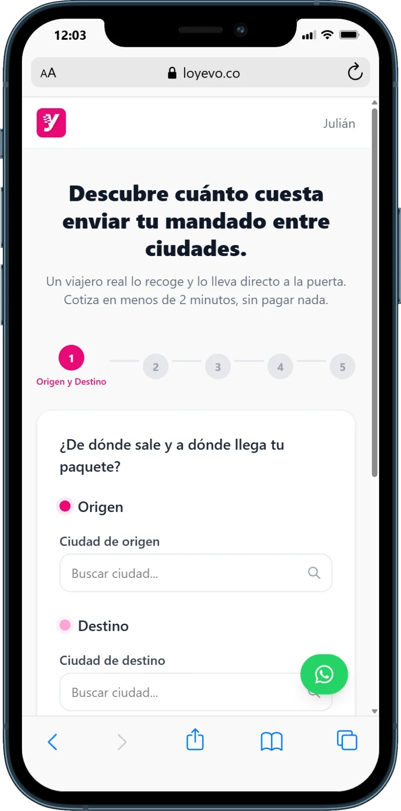

Enviar mapa de medición
Documento técnico para auditar, unificar píxeles, eventos, IDs y fuente de verdad del mandado.
Plan de salida · versión inicial
Una ruta de ocho semanas para pasar de la base registrada y la medición fragmentada a un piloto de adquisición que pueda medirse, aprender y sostenerse.
Decisiones de esta semana
Estas decisiones habilitan el resto del cronograma. Si alguna se retrasa, el piloto debe correrse, no saltarse la validación.
Documento técnico para auditar, unificar píxeles, eventos, IDs y fuente de verdad del mandado.
Acordar qué sucede entre landing, cotización, registro, app, pago, match y entrega.
Confirmar la base pequeña, promoción o viajes gratis, mecánica de referidos y criterio para considerar que la app fue bien recibida.
Cronograma visual
El trabajo principal se concentra en ocho semanas. Los bloques indican responsables y se revisan semanalmente; la pauta solo arranca cuando estén listos accesos, base, piezas y medición.
Hito de salida: el piloto arranca cuando estén listos los accesos, la base, las piezas y la medición. Al cierre de la semana 8 se revisan señales y se define el siguiente paso.
Registro de avances · actualizado el 27 oct 2026
Este registro queda debajo del calendario para separar lo planeado de lo ejecutado. Aquí se agregan los avances que ya tienen evidencia y fecha de actualización.
GTM-T7W5FHZ7 fue creado por Daniel Barrera y conectado a Loyevo para centralizar las etiquetas.
La cuenta 407123361 recibe datos de la web. Tag Manager, GA4 y el clic hacia Google Play Store ya fueron probados correctamente.
Conductores, Viajeros frecuentes y Transporte y traslado están configuradas en Bogotá para captar personas dispuestas a llevar encargos.
Ver fichas de audiencias →El historial real de Meta confirma una campaña de generación de clientes potenciales con dos conjuntos: Cotizador y Home. Se activaron seis conceptos estáticos entre el 19 y el 20; los videos «Tres razones» y «Tener opciones» comenzaron entrega el 22 de octubre.
La campaña inició con $5.000 COP/día, subió a $8.000 el 20 de octubre y a $20.000 el 21. El conjunto Home se desactivó el 20, concentrando la lectura en la ruta del cotizador.
El informe centraliza la lectura de campañas y permite consultar el desempeño sin depender de capturas aisladas.
Abrir informe de pauta →Entre el 29 de septiembre y el 26 de octubre se observan 1.335 eventos, 109 usuarios, 98 first_open y 16 sign_up. El acceso ya permite auditar el comportamiento real de la aplicación.
La app Flutter ya reporta eventos a Firebase. El siguiente paso es integrar y validar Meta SDK para primera apertura y registro; purchase todavía no registra flujo.
El 26 de octubre Meta mostraba 10 leads desde el inicio y 5 en el periodo del fin de semana; el reporte operativo informaba 2 registros en app y 4 en web desde el viernes. Son señales cercanas, pero con definiciones distintas: deben conciliarse por fecha, fuente y usuario antes de reportarlas como registros únicos.
Tras revisar autenticación DNS y el dominio del enlace, el equipo confirmó el 20 de octubre que los correos dejaron de llegar a Spam. El siguiente trabajo es usar CRM y WhatsApp para explicar el servicio y activar a quienes se registran.
Se trabajará el inventario creativo de noviembre con hipótesis por corredor, objeción, hook, formato, CTA y criterio de aprendizaje.
Ver benchmark de Skydropx →Producto en funcionamiento
La experiencia comienza con origen y destino, promete una cotización en menos de dos minutos y conduce al usuario desde los datos del paquete hasta el resultado y la gestión de sus mandados.

Criterio compartido
El tablero debe mostrar cada etapa por separado. Un clic hacia la tienda indica intención; no demuestra instalación, registro ni un envío completado.
Clic a Google Play → first_open → sign_up → cotización → mandado pagado → match → entrega → repetición.
Meta, Analytics, Firebase y producto pueden mostrar cifras diferentes porque miden momentos, ventanas y poblaciones distintas.
Adcom gestiona pauta, medición web y reporte; Desarrollo Loyevo implementa SDK, eventos y releases; el cliente confirma accesos, presupuesto y datos de negocio.
Pauta · tareas desglosadas
Estas son las tareas de Agencia en orden. La preparación ocurre en paralelo a la prueba CRM, pero el primer peso de pauta espera su señal de acogida.
Auditar los tres píxeles, unificar los que correspondan y eliminar eventos duplicados o inconsistentes.
Establecer eventos, valores e identificadores antes de comprar alcance.
Reunión con fábrica / producto de Loyevo para implementar, probar y aprobar el etiquetado.
Puertas de decisión
Cada puerta evita que el equipo trate de resolver con inversión un problema de producto, operación o confianza.
Eventos y fuentes de datos permiten saber qué persona cotizó, pagó, tuvo match y recibió su encargo.
La base y las pruebas confirman qué corredor, caso de uso y mensaje muestran una señal real de valor.
La adquisición solo escala si activación, match, entrega, margen y repetición no deterioran la promesa.